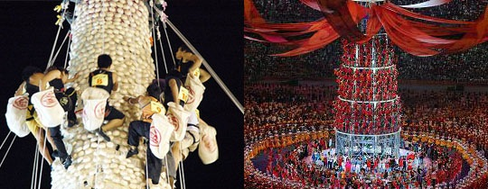
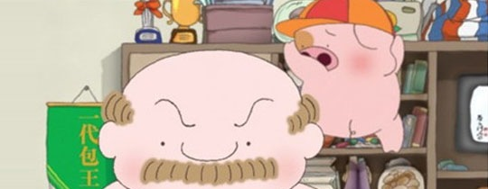

就是希望抢包山能够成为奥运项目，麦兜能成为一代包王。虽然这是个很不靠谱的愿望，不过很多人已经在今年的奥运会闭幕式上发现，众多身穿自行车服装的人，表演了一次抢包山。这是闭幕式里少有的亮点，也是对麦兜妈妈的欣慰。心存童真的人们也都希望抢包山能有日真的成为奥运项目，到时候的吉祥物一定要是麦兜。

亲爱的主席： 你好吗？我很好。 你吃包子吗？我吃包子！ 我们居住在香港这里的人，很爱吃包子：小笼包、上海包、广东包、莲蓉包…我认为，抢那些包子，十分重要。也算是一项运动，真的。要大力气，大吃晚上的粥，和大节瓜。按照我愚蠢的见解，抢那些包子，也应该是奥运会比赛项目。让全世界的运动员抢过，世界便和平了。 你有孩子吗？我有一个孩子，麦兜。他是一个好男孩，他非常懂得抢那些包子。有一天，我看见他抢包山，抢了一个奥运金牌，那便是一个母亲能够有的最大的安慰。孩子的才干，得到了世界人类的知道，父母愿意做什么的东西都行。于是我写了这封信给你，虽然你不知道我是什么微细的东西，但我的孩子很大，很大！有一天，你都会知道。多谢合作。 ——你忠实的麦太